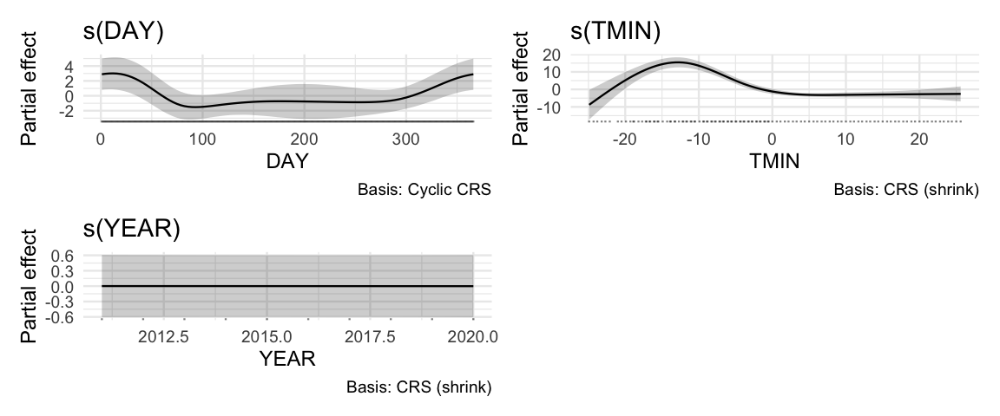
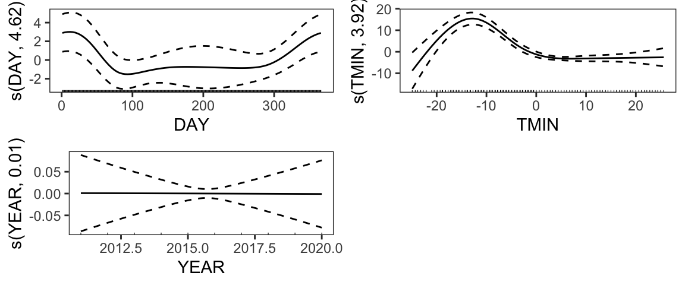

37 Generalized Additive Models - Assessment & Interpretation
37.1 Section Learning Outcomes
Last module we started working with GAMs, and this module we just continue. We’ll now learn about the rest of the modeling process for GAMs, including some unique details of model assessment, selection, and interpretation.
By the end of the module you will:
- Plan, fit, assess, and interpret generalized additive models to data, making use of appropriate visualizations and model selection
37.2 Text Reference
Recommended reading for the materials covered in this tutorial can be found in:
- Course Notes Chapter 19
- GAMs in R, Chapter 2
It’s suggested that you consider consulting these resources after doing this tutorial, with particular focus on any topics you found most challenging.
37.3 Assessment
For a GAM, model assessment is nearly the same as it would be for the corresponding multiple linear regression model or GLM.
Linear models
It seems odd to call a GAM a “linear” model…although it could contain a combination of linear terms and smooths (plus categorical predictors too).
Usually when we say “linear model” it’s a shorthand for “multiple linear regression model using the Gaussian (Normal) family and identity (no) link function.”
In any case, for this (Gaussian, identity link) type of model, we’d check:
- Linearity (only for terms not fitted as smooths!)
- Independence of residuals
- Normality of residuals
- Error variance constant
To check these, in addition to scatter plots of the response with each quantitative predictor included as a linear (not smooth) term, we’d use a residuals vs fitted plot, a histogram of the residuals, and a residual ACF.
GLMs
For binary, count, beta, and other regression models using different families and link functions, we already know to check:
- Linearity on the scale of the link function (usually logit-linearity or log-linearity)
- Independence of residuals
- Mean-variance relationship is as expected.
To check these, in addition to scatter plots of the (log or logit transform of the) response with each quantitative predictor included as a linear (not smooth) term, we’d use a scaled residual plot and and ACF plot.
If the model is a GAM rather than a GLM, the only difference is that we don’t need to check linearity for the smooth predictors.
GAMMs?
GAMs can also include random effects. If they do, we’d call them GAMMs, for Generalized Additive Mixed-Effects Models. But that doesn’t change the model assessment condtions or approach at all! Well, it might be wise to use a scaled residual plot rather than a residuals vs fitted plot in the presence of random effects, even if it’s a normal model with identity link. But that’s the only change to the process, and you can do that if you wish anyway…
37.4 gam.check()
The mgcv package contains a function, gam.check(), that helps carry out some additional checking for GAMs. One possible concern that it helps with is underfitting: what if you specified k too small, and your smooth is too smooth (not wiggly enough) to actually capture the trends in the data well?
Check out the output below, from running gam.check on snow.gam, the model that we fitted to the data on snowfall amounts at the GRR airport. The model is also refitted here, to remind you what model was used.
gam.check() output: convergence
The first few lines of output from gam.check() provide some feedback about how the optimization (model fitting) process went. You want the model fitting to have converged, for the Hessian to be positive definite at the solution (best-fit parameter estimates), and for the model not to be rank deficient. If you see any notes to the contrary in this first section (like: “fitting failed to converge” or “model is rank deficient” etc.), that is a huge problem - it means your model wasn’t actually properly fit to the data. If this happens, chances are you also got warnings or errors when you ran gam(); either way, you should not proceed any further, but instead need to figure out what went wrong and correct it!
gam.check() output: basis dimension k
As the output suggests, gam.check() also carries out a hypothesis test of the null hypothesis that there is NOT a lot of pattern left in the residuals (as a function fo the smooth predictor) and so, in other words, the basis dimension k is big enough.
The reported “k-index” gets smaller than 1, and closer to 0, as more underfitting (oversmoothing) occurs. Smaller values of the k-index will also yield smaller p-values, and if the p-value is very small, then that may be a sign that k was set too low and should be higher.
However, take the results of this test with a grain of salt. Sometimes it’s a helpful warning to make k bigger. Other times, though, you may obtain a small p-value for this test, try raising k (maybe a lot), and find that the shape of the resulting smooth just doesn’t change, and the p-value of this test just remains small. If that happens, don’t worry about it and keep k at a size you think is reasonable given the context of the problem – sometime this particular test just indicates that k “needs” to be larger when it really doesn’t.
37.5 Prediction Plots
We can make prediction plots for a GAM just as we have been for other models, using ggpredict().
For example…check out this prediction plot, and try making a few more, for our snow.gam model.
ggpredict() do? Try to figure it out by changing the value, or by running ?ggpredict and consulting the function help, or consulting the online help at https://strengejacke.github.io/ggeffects/reference/ggpredict.html#arguments.
The resulting prediction plot will contain varying values of two different terms, the DAY and also the YEAR, if we used terms = c('DAY', 'YEAR'). The [2022] changes things. Check the help and try again…
TMIN and the snow on the previous day (PREV.SNOW) were used?
If you said, It’s impossible to give a single correct answer since a range of representative values of TMIN and PREV.SNOW are used for each month and day of interest.…It might make sense to do something like this in this particular case, since for example certain temperatures are really unlikely depending on the season, and it may not make sense to hold predictors like TMIN and PREV.SNOW fixed at single values! But that is actually what ggpredict() is doing…
Otherwise:
Remember, you can find out the values at which predictors not included in the plot are fixed, print the output of ggpredict() to the screen and look at the bottom of the output, where it tells you which predictor values were ‘Adjusted for’. It’s important to know these values, and report them if presenting a prediction plot, so that the viewer can put the exact predictions shown into context (and notice if there is something practically impossible about the conditions for which predictions were made, like has happened here)!
37.6 Partial Plots
Some kind of prediction plot is almost crucial to understand a fitted GAM, since the smooth coefficients are so unsuitable for interpretation by most humans that they are not even reported in a GAM model summary! A picture of the fitted smooth is basically necessary to visualize what the model says about the smooth predictor-response relationship.
There’s a type of prediction plot that many use to visualize a fitted smooth, which is somewhat different from the prediction plots we’re used to seeing.
These are often called “partial plots” because instead of showing the expected response variable value as a function of one (or more) predictors, they show the amount by which the expected response variable would go up or down as a function of one (or more) predictors.
Wait…what’s the difference between those, exactly? Let’s look at an example. You recently saw a prediction plot for mm of snowfall as a function of day of the year. What about a partial plot for the same smooth? Check it out…note use of the function draw() from package gratia to do this, and a second way of making a very similar plot using the mgcViz package.
# graphics settings
theme_set(theme_minimal(base_size = 9))
# make the plot
gratia::draw(snow.gam)
# make the plot using mgcViz
mgcViz::getViz(snow.gam) |>
plot(allTerms = FALSE) |>
print(pages = 1)Warning: Using `size` aesthetic for lines was deprecated in ggplot2 3.4.0.
ℹ Please use `linewidth` instead.
ℹ The deprecated feature was likely used in the mgcViz package.
Please report the issue at <https://github.com/mfasiolo/mgcViz/issues>.
In our previous prediction plot, the units of the y axis were the same as the response variable: mm of snowfall on the day of interest.
In the new partial plot(s), the units are instead the increase or decrease in snowfall on the day of interest relative to the average day.
In models with a link function, the partial effect is often shown on the scale of the link function (so in units of log(response variable) or logit(response variable), etc.), and to make it even more confusing the gratia and mgcViz documentation don’t always make it clear whether the partial effects are on the link or response scale.
One way to think of it is that the partial plot just shows the effect of the predictor on the response variable value, not the expected response variable value. It can thus help answer: how much does each change in the predictor make the response go up or down?
37.7 GAM Selction: p-values
Carry out model selection on GAMs with a little bit of caution: p-values are a little bit approximate! Results are best when using ML (1st choice) as the method for model fitting (or REML as a 2nd choice).
Note: for GAMs, we use anova() (not Anova()). This is UNLIKE the advice you were given for models fitted with lm(), glm(), or glmmTMB()! Why? car::Anova() doesn’t have a method for working with models fitted with gam(). But the authors of the mgcv package did write a method for the base R function anova() specifically for gam() fitted model objects, and it works in the same way as car::Anova()’s Type II tests (doing marginal rather than sequential testing). So for a GAM (only), anova() is what we want.
Run the test and check the selection results for our snow model:
anova(snow.gam)Note that for GAMs, we use anova() rather than car::Anova(). But we’re doing the same “type II marginal” tests as we do with Anova() for other models. If you’re curious, this happens because the mgcv package has a special method for the anova() function when applied to fitted GAM objects.
37.8 GAM selection: Information Criteria
As for ANOVA, keep in mind that these comparisons are somewhat conditional/approximate given the way that GAM models are fitted; and you should be sure to use method = 'ML' when fitting if you plan to use AIC or BIC for selection and inference later.
You can just fit a reduced model with gam(), but if you wish to update() the already fitted model to remove one (or more) terms, note that you have to “subtract” a term not by VARIABLE_NAME or s(VARIABLE_NAME) but will need to include the full s() specification from the orginal model formula, like below:
37.9 Interactions
In GAMs, it is possible for a categorical predictor to interact with a quantitative one modeled via a smooth term.
For example, in our snow model, what if we thought that DAY interacted with YEAR? That is, what if we thought that there was a different smooth relationship between amount of snowfall and day of the year for each individual year?
To do this, we’ll need to factor() the YEAR variable to ensure it’s treated as categorical.
Then, we fit the model with this interaction with the following syntax in the model formula: FACTOR_PREDICTOR + s(QUANT_PREDICTOR, bs = ___, k = ___, by = FACTOR_PREDICTOR). Note that the categorical predictor must be stored as factor type, and must be included both as a fixed effect on its own and as the “by” variable in the s() smooth term. Try an example:
For a bunch more (optional) information about these kinds of interactions, see https://stat.ethz.ch/R-manual/R-devel/library/mgcv/html/factor.smooth.html (and links therein) in the mgcv documentation, and also an exploration of the topic by Gavin Simpson.
37.10 2D smooths
It’s also possible to specify a GAM in which you have a smooth function of two quantitative predictors. You can think of this as a “heat map” type of relationship, where the response variable has “hot spots” with high values and “cold spots” for with low values for certain combinations of values of the two predictors.
This kind of specification is often of interest if you have spatial data (you may want a 2D smooth of x and y location).
There are many ways to do this and it can get complicated and very technical, but to get you started, I’d recommend:
- Use a thin-plate shrinkage basis (
bs = 'ts') - Don’t make
ktoo small - spatial patterns might have quite a few hot/cold spots, especially over large “areas” - add the 2D smooth to your model formula as a term like:
response ~ predictor1 + predictor2 + s(predictor3, predictor4, bs = 'tp') + ...(both predictors inside the sames()) - If interested, find a lot more information in
mgcvandmgcVizdocumentation:- fitting 2D smooth terms fancier ways/in special cases: https://stat.ethz.ch/R-manual/R-devel/library/mgcv/html/te.html
- plotting 2D smooth terms: https://mfasiolo.github.io/mgcViz/reference/plot.mgcv.smooth.2D.html
37.11 Random Effects in GAMs
You may well need to model non-monotonic nonlinear relationships and also need random effects in the same model.
Combining both of these features is a little bit beyond the scope of our class, mainly because model fitting and specification can rapidly become complicated and time consuming. However, especially in somewhat simpler cases, you can give it a try as illustrated below. Basically, as we saw briefly before, we add a smooth to our gam() model with syntax s(RE_variable, bs = 're'). This 're' basis is specifically and only for random effects.
mymodel <- gam(response ~ predictor1 + s(predictor2, ...) +
... + predictorN +
s(random_effect_variable, bs = 're'),
family = ... , data= ..., method = 'ML')Another option (slightly more effort and may fit more slowly) is to use the function gamm4() from the package gamm4 to fit a GAMM. The syntax is then similar to (g)lmer(), and is illustrated below. You may want to try this method if you need nested random effects. Note that since both random effects and smooths can “use up” a lot of model fitting “power,” often a big dataset is required…and that also makes model fitting slower. So fitting this type of model can involve a fair amount of time investment and frustration, but can also be an eloquent way of modeling what is really going in in some scenarios.
library(gamm4)
mymodel <- gamm4(response ~ predictor1 + s(predictor2, ...) +
... + predictorN +
# here is the random effect!
random = ~(1|random_effect_variable),
family = ... , data= ..., REML=...)
# to view the model summary...
summary(mymodel$mer)
# to get model residuals...
resid(mymodel$mer)
# generally you will work with the mymodel$mer output object and not the mymodel$gam for assessment etc.37.12 Practice
One way to become more familiar with GAMs is to work through fitting a few of them. That’s what you’re asked to do next! You can work here, or (probably better) work in RStudio in a quarto document so you hare working reproducibly and have a record of your work.
You’re asked to choose one of the suggested datasets and complete the tasks below.
You’ll report on your experience as part of this module’s practice problems.
Of course, you can repeat for another (and another…and another…) if you have time and interest!
Tasks for GAM practice
- Explore the data just a little, then fit your a regression model. For the Zambia dataset, it’s suggested you’d use
height_zscoreas the response variable and predictors chosen from among:mother_height,mother_birth_age,breastf, andmother_education.- Model planning should be very rapid to save time, but do consider carefully which predictor(s) should be included as smooths, and of course make sure your model includes at least one smooth term.
- For each smooth, make a note to yourself to explain: How did you decide which predictors required smooth terms? What smoothing basis (
bs = ...) will you use? What basis dimensionkdid you choose and why? - Consider adding an interactions between a smooth and a categorical predictor for practice - remember these require special coding syntax in the model formula.
- View the model summary and, more importantly, make prediction plots - what do you learn from them?
- If time, you can do model selection to aid interpretation.
- If time permits, carry out model assessment. (We normally do this before interpretation! But, in order to prioritize learning how to interpret GAMs and knowing your time is limited, this got lower priority…) Tip for Zambia dataset: If you find a problem with the ACF, consider adding a random effect of
districtorregion(but recall we can’t nest them in a simplegam()).
37.13 Data Options
Note, To read in data files that are in tab-delimited text format, you can use the function readr::read_table(), as illustrated below for the Zambia data.
Zambia child growth data
The code below reads in a dataset with public health data from Zambia and does some data cleaning. The response variable of interest is height_zscore, the z-score of the child’s height compared to the national average at their age. (The assumption is that malnourished or unhealthy children will be unusually small, and many of these children are, especially at older ages.) Other variables include:
child_sexbreastfduration of breast-feeding in monthschild_agechild’s age in monthsmother_birth_agemother’s age when the child was born, in yearsmother_heightmother’s height in cmmother_BMImother’s body mass indexmother_educationmother’s education levelmother_workmother’s work statusregionRegion in Zambia of mother’s residencedistrictDistrict in Zambia of mother’s residence
zam <- read.table('https://raw.githubusercontent.com/cran/sdPrior/master/inst/examples/zambia_height92.raw',
header=TRUE)
names(zam) <- c('height_zscore', 'child_sex', 'breastf', 'child_age',
'mother_birth_age', 'mother_height', 'mother_BMI',
'mother_education', 'mother_work', 'district', 'region', 'time')
zam <- zam |>
mutate(child_sex = ifelse(child_sex == 1, 'Male', 'Female'),
mother_education = factor(mother_education),
mother_education = fct_recode(mother_education,
'None' = '1',
'Primary School' = '2',
'Secondary School' = '3',
'Higher Education' = '4'),
mother_work = ifelse(mother_work==1, 'Working', 'Not Working'),
region = factor(region),
region = fct_recode(region,
'Central' = '1',
'Copperbelt' = '2',
'Eastern' = '3',
'Luapula' = '4',
'Lusaka' = '5',
'Northern' = '6',
'Northwestern' = '7',
'Southern' = '8',
'Western' = '9'),
district = factor(district)) |>
dplyr::select(-time)
zam <- arrange(zam, district)
glimpse(zam)More data options
- How does pitch frequency change over time as a person sings? http://www.statsci.org/data/general/ooh.html
- How does the magnitude of light emitted by star RR Lyrae 1263 vary over time? http://www.statsci.org/data/oz/rrl1263.html
- Can you predict the rainfall in Canberra? http://www.statsci.org/data/oz/wind_ca.html
- How do PCB concentrations in trout change as trout age? http://www.statsci.org/data/general/troutpcb.html
- How have the winning times in the Sydney to Hobart Yacht race changed over time? http://www.statsci.org/data/oz/sydhob.html
- What factors affect the number of species (your choice of group - finches, plants, endemic finches or plants…) present in the Galapagos? http://www.statsci.org/data/general/galapagos.txt
- What factors affect acidity of rainfall water in the UK? http://www.statsci.org/data/general/rainuk.html
- Consider data from the Scripps Institution of Oceanography \(CO_2\) Program. Model the total dissolved inorganic carbon (
DIC) in sea water over time at three observationStations, and as a function ofDepth,,Salinity, andTemperature. - Consider a dataset giving details on
priceand other characteristics of 6172 Lego sets, including the number ofPiecesandMinifiguresinside and theYearthey were created, as well as theName,Theme,SubthemeandItem_Numberof each set. Data are at: https://sldr.netlify.app/data/legos.csv. Try to predict the price of a lego set. - Can you predcit when bats will begin their migration journey? For detailed context, see the previous module: https://connect.cs.calvin.edu/DATA545/gams-1/. Data is available at: https://ndownloader.figshare.com/files/9348010.
37.14 Yet Another Example
Consider this one If you have extra time ONLY
(Probably not a GAM problem - really, this is more practice with REs and interactions , although you may consider smooth terms too if you think it’s appropriate.) Fit a model for the problem below and do model assessment for your fitted model, correcting as needed for any problems found.
The Panel Study of Income Dynamics (PSID) is a longitudinal study of a representative sample of US individual. The study started in 1968 and has tracked people over time, recording data on their age, educaction, sex, income, and a personal ID number (person). The data are stored in dataset psid in package faraway (run the line, library(faraway) to load the data - there’s nothing else needed to “read it in). It is suggested that you fit a model for log(income) as your response, and if you use the year predictor, first center it by subtracting the median value. The code below creates the variables log_income and scaled_year for you. Things to consider as you set up your model (you don’t have to include written answers to these questions, just think before you fit): What predictors would you include – any interactions? What random effect(s) or grouping variables would you use? Would you consider a random slope model for these data?
You can access the data via:
library(faraway)
psid <- psid |>
mutate(log_income = log(income),
scaled_year = year - median(~year, data = psid, na.rm = TRUE))Workspace for psid example, if you want to work here in the tutorial. Read in the data first as shown above!